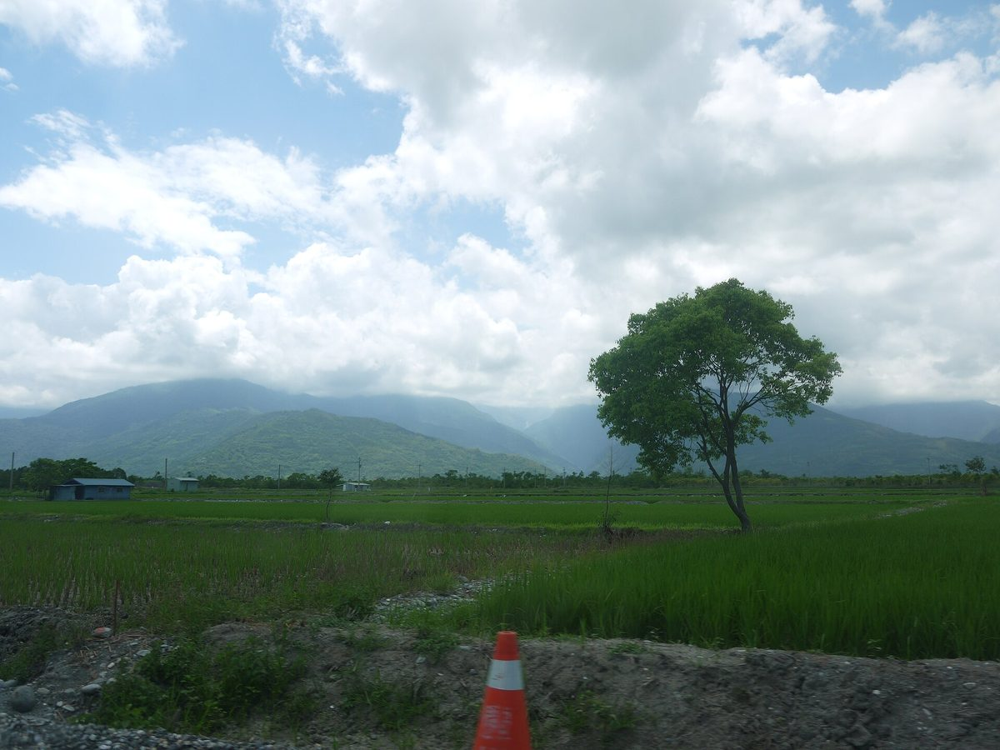

대만 화롄 펑린 1,000ha 태양광 단지 '지역 환원금' 명목 뇌물 혐의…태양광 기업 회장 등 7명 구속

검찰, 훙더에너지가 당시 진장에 3,000여만·전 농회 총간사에 1,000여만 대만달러 건넸다고 판단…피고들은 혐의 부인, 사업은 주민 반발로 이미 철회
대만 화롄현 펑린진(鳳林鎮)에 1,000ha가 넘는 태양광 단지를 추진하던 태양광 기업 훙더에너지(泓德能源)가 '지역 환원금(回饋金)' 명목으로 당시 진장(읍장) 등 지역 유력자에게 뒷돈을 건넨 혐의로 수사를 받고 있으며, 화롄 지방법원은 회사 회장과 사장 등 7명을 구속했다. 검찰은 8명의 구속을 청구했고, 법원은 사안이 무겁고 진술이 엇갈려 도주와 말 맞추기 우려가 있다며 당시 진장과 전 화롄현 농회 총간사, 태양광 업자 1명, 회사 회장·사장·부사장·협리를 접견 금지 조건으로 구속하고 재무책임자는 돌려보냈다. 수사 당국은 이 회사가 2019년부터 땅이 넓고 평평한 데다 대만전력 화둥 지역의 매입 단가가 높은 펑린에 대규모 부지를 모았으며, 2020년부터 소형 재생에너지 설비 심사를 읍면 사무소가 맡게 되면서 토지 용도 변경과 공유지 임대, 원주민 부락 협의 동의 등에 재량을 가진 진장이 사업의 열쇠가 됐다고 보고 있다. 검찰은 회사가 여러 단계의 계좌이체로 자금 흐름을 끊은 뒤 환원금 명목으로 당시 진장에게 3,000여만 대만달러, 전 총간사에게 1,000여만 대만달러를 건넸고, 두 사람이 돈을 받은 뒤 주민 반대 여론을 누그러뜨리는 역할을 했다고 판단하고 있지만, 사업은 주민의 거센 반발로 결국 철회됐다. 적용 혐의는 부패치죄조례·자금세탁방지법·증권거래법 위반과 공무상 비밀누설, 업무상 횡령·배임 등이며, 법원에 따르면 일부 피고는 객관적 사실만 인정했을 뿐 모두 구속 청구서에 적힌 범죄 행위는 부인하고 있고 아직 붙잡히지 않은 공범도 있다.
시민에너지 관점
주민과 나누겠다던 '환원금'이 여러 계좌를 거쳐 지역 유력자 두 사람에게 수천만 대만달러씩 흘러갔다는 검찰의 판단은, 이익공유가 누구에게 어떤 절차로 가는지 드러나지 않으면 주민 몫이 개인의 뒷돈으로 바뀔 수 있다는 위험을 보여 준다. 독일은 2021년 재생에너지법(EEG) 개정으로 풍력과 지상 태양광 사업자가 생산 전력 1kWh당 최대 0.2센트를 인근 지자체에 낼 수 있게 하면서, 그 돈이 법에 정한 기준에 따라 지자체 예산으로 들어가도록 해 개인의 손을 거치지 않게 했다. 장부를 공개하고 총회를 거치면 사업이 늦어진다는 반론도 있겠지만, 펑린 사업은 뒷돈으로 여론을 누르려다 끝내 주민 반발에 무너졌고, 주민이 출자한 마을 법인이 지분으로 몫을 갖고 배분을 총회에서 정해야 돈이 주민 모두의 장부에 남는다. 국내 주민참여형 재생에너지 사업도 이익공유금을 받는 곳과 금액, 배분 절차를 공개하도록 제도로 못 박아야 한다.
출처: 자유시보 2026-10-24 화멍징 원문 보기
台湾・花蓮県鳳林の1,000ha太陽光団地、「地域還元金」名目の贈賄容疑…太陽光企業の会長ら7人勾留
検察、泓徳能源が当時の鎮長に3,000万台湾ドル余り、元農会総幹事に1,000万台湾ドル余りを渡したと判断…被告らは容疑を否認、事業は住民の反発で既に撤回
台湾・花蓮県鳳林鎮で1,000haを超える太陽光発電団地を計画していた太陽光企業の泓徳能源が、「地域還元金（回饋金）」の名目で当時の鎮長ら地元の有力者に裏金を渡した疑いで捜査を受けており、花蓮地方裁判所は同社の会長や社長ら7人の勾留を決めた。検察は8人の勾留を請求し、裁判所は事案が重大で供述が食い違い、逃亡や口裏合わせの恐れがあるとして、当時の鎮長、元花蓮県農会総幹事、太陽光業者1人、同社の会長・社長・副社長・協理を接見禁止付きで勾留し、財務責任者は帰宅を認めた。捜査当局は、同社が2019年から土地が広く平坦で台湾電力の花東地区の買取単価が高い鳳林で大規模に用地を集め、2020年から小型再生可能エネルギー設備の審査を郷鎮公所が担うようになったことで、土地の用途変更や公有地の賃貸、先住民集落との協議同意などに裁量を持つ鎮長が事業の鍵になったとみている。検察は、同社が何段階もの口座振替で資金の流れを断ったうえで還元金の名目で当時の鎮長に3,000万台湾ドル余り、元総幹事に1,000万台湾ドル余りを渡し、2人が金を受け取った後に住民の反対世論をなだめる役割を果たしたと判断しているが、事業は住民の強い反発で結局撤回された。容疑は汚職治罪条例、マネーロンダリング防止法、証券取引法違反と公務上の秘密漏洩、業務上横領・背任などで、裁判所によると一部の被告は客観的事実のみを認め、全員が勾留請求書に記された犯罪行為を否認しており、まだ身柄を確保されていない共犯者もいる。
市民エネルギーの視点
住民と分かち合うはずの「還元金」が複数の口座を経て地元の有力者2人に数千万台湾ドルずつ流れたという検察の判断は、利益共有が誰にどんな手続きで渡るのかが見えなければ、住民の取り分が個人の裏金に変わりかねない危うさを示している。ドイツは2021年の再生可能エネルギー法（EEG）改正で、風力と地上設置型太陽光の事業者が発電量1kWh当たり最大0.2セントを周辺自治体に支払えるようにし、その金が法に定めた基準で自治体予算に入るようにして個人の手を経ないようにした。帳簿を公開し総会を経れば事業が遅れるという反論もあるだろうが、鳳林の事業は裏金で世論を抑えようとして結局住民の反発で崩れた。住民が出資した地域法人が持分として取り分を持ち、配分を総会で決めてこそお金は住民全員の帳簿に残るのであり、韓国の住民参加型再生可能エネルギー事業も、利益共有金の受け取り先と金額、配分手続きを公開するよう制度で定めるべきだ。
出典: 自由時報 2026-10-24 花孟璟記者 原文を読む
台湾花莲凤林逾1,000公顷光电园区涉以"回馈金"名义行贿…光电企业董事长等7人羁押
检方认定泓德能源向时任镇长交付3,000多万、向前农会总干事交付1,000多万新台币…被告否认犯罪，项目已因居民反对撤案
在台湾花莲县凤林镇推动逾1,000公顷光电园区的光电企业泓德能源，因涉嫌以"回馈金"名义向时任镇长等地方有力人士行贿而遭侦办，花莲地方法院已裁定羁押该公司董事长、总经理等7人。检方声请羁押8人，法院认为案情重大、供词不一，有逃亡及串供之虞，裁定时任镇长、前花莲县农会总干事、一名光电业者以及公司董事长、总经理、副总、协理羁押禁见，财务长则获请回。侦办单位认为，该公司自2019年起看中凤林土地平广、台电花东地区收购电价较高而大量整合用地，且自2020年起小型再生能源设备审查改由乡镇公所负责，对土地变更、公有地标租及原住民部落咨商同意等握有裁量权的镇长因此成为项目关键。检方认定，该公司以多层转账设置金流断点后，以回馈金名义分别向时任镇长交付3,000多万新台币、向前总干事交付1,000多万新台币，两人收款后居中疏通居民反对声浪，但项目最终仍因居民强烈反弹而撤案。全案涉及违反贪污治罪条例、洗钱防制法、证券交易法及公务员泄密、业务侵占、背信等罪，据法院说明，部分被告仅承认客观事实，且均否认检方羁押声请书所载犯罪行为，另有共犯尚未到案。
市民能源视角
检方认定原本应与居民分享的"回馈金"经由多个账户分别流向两名地方有力人士、金额各达数千万新台币，这说明如果利益分享给谁、经由什么程序都不透明，居民的份额就可能变成个人的黑钱。德国在2021年修订《可再生能源法》（EEG），允许风电和地面光伏业者按每度电最多0.2欧分向周边地方政府支付款项，并让这笔钱按法定标准进入地方预算，不经个人之手。或许有人认为公开账目、召开大会会拖慢项目，但凤林项目试图以黑钱压制民意，最终仍在居民反对下告吹；只有由居民出资的地方法人以股权持有居民份额、并由大会决定分配，钱才会留在全体居民的账本上。韩国的居民参与型可再生能源项目，也应以制度规定公开利益分享金的接收方、金额与分配程序。
来源: 自由时报 2026-10-24 记者花孟璟 查看原文
Taiwan's Hualien: bribes alleged under guise of "community payback funds" for 1,000-hectare Fenglin solar complex; solar firm chairman among seven detained
Prosecutors say Hong De Energy paid the then township chief more than NT$30 million and a former farmers' association general secretary more than NT$10 million; defendants deny the charges, and the project was already withdrawn after local opposition
Solar company Hong De Energy (泓德能源), which had pursued a solar complex of more than 1,000 hectares in Fenglin Township, Hualien County, Taiwan, is under investigation on suspicion of paying off local power brokers, including the then township chief, under the name of "community payback funds" (回饋金), and the Hualien District Court has ordered seven people, including the company's chairman and president, detained. Prosecutors sought the detention of eight; the court, citing the seriousness of the case, conflicting statements and the risk of flight or collusion, held the then township chief, a former general secretary of the Hualien County farmers' association, a solar contractor, and the company's chairman, president, vice president and an assistant vice president incommunicado, while the chief financial officer was released. Investigators believe the company began assembling large sites in Fenglin from 2019, drawn by its broad, flat land and Taipower's higher purchase prices in the Hualien-Taitung area, and that once township offices took over the review of small renewable energy installations in 2020, the township chief, with discretion over land-use changes, leases of public land and consent from Indigenous communities, became the key to the project. Prosecutors allege that, after breaking the money trail through layered transfers, the company paid more than NT$30 million to the then township chief and more than NT$10 million to the former general secretary as payback funds, and that the two worked to calm local opposition after receiving the money, yet the project was ultimately withdrawn amid strong resistance from residents. The charges include violations of the Anti-Corruption Act, the Money Laundering Control Act and the Securities and Exchange Act, as well as leaking official secrets, embezzlement and breach of trust; according to the court, some defendants admitted only to the objective facts, all deny the criminal conduct described in the detention request, and some accomplices remain at large.
Citizen Energy View
Prosecutors' finding that "payback funds" meant to be shared with residents flowed through multiple accounts to two local power brokers, tens of millions of Taiwan dollars each, shows how residents' share can turn into personal kickbacks when it is unclear who receives benefit-sharing money and through what process. Germany's 2021 amendment of its Renewable Energy Sources Act (EEG) let wind and ground-mounted solar operators pay nearby municipalities up to 0.2 euro cents per kWh generated, with the money going into municipal budgets under statutory rules rather than through any individual's hands. Some will argue that open books and general assemblies slow projects down, but the Fenglin project tried to buy off opposition and still collapsed under residents' resistance; only when a local entity funded by residents holds their share as equity, and a general assembly decides how it is distributed, does the money stay on the books of all residents. Community-participation renewable projects in Korea should likewise be required by rule to disclose who receives benefit-sharing payments, how much, and by what procedure.
Source: Liberty Times 2026-10-24 Hua Meng-ching Read the original